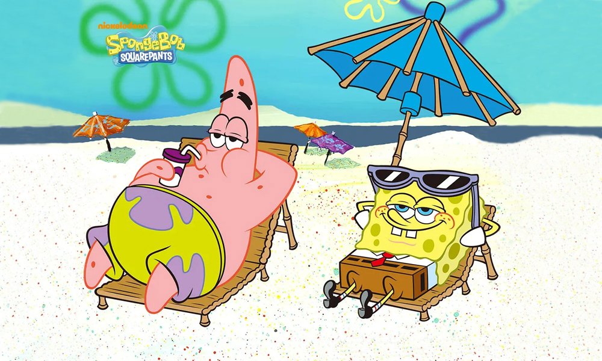

影片意义
海绵宝宝的形象永远是那么的积极向上，在他遇到什么困难的时候，总是能够笑着去面对，记得海绵宝宝有一句口头禅就是:“我准备好了！”在他工作的时候，他经常会一次性重复说三遍这句话来展示他乐观的心态。总是能在一些小事情里找到乐趣，比如抓水母，甚至一条海带他都能玩很久，海绵宝宝可以说是知足常乐的代表性人物了！
这部动漫里面章鱼哥可能看起来很古板，他经常拒绝和海绵宝宝一起胡闹，但是没有海绵宝宝的章鱼哥也失去了乐趣，章鱼哥可能就是那种外冷内热的人物代表了，他其实也在默默关心着海绵宝宝，而章鱼哥这个人本身虽然很平凡但是他有梦想，章鱼哥经常会想成为一个音乐家或者说演奏家，即使得不到别人的认可，章鱼哥还是坚持自己的梦想。可以说是平凡而不平庸，追求自己的梦想，而我们现在很多人却做不到这一点，在这个方面章鱼哥是我们学习的榜样。
蟹老板这个人物在动漫里面一开始给我们的感觉就是一个财迷的形象，蟹老板经营着蟹堡王，虽然他很爱钱，见钱眼开，但同时也不能否认他很有能力，并且他有一个女儿，他对于自己的女儿可以说是毫不吝啬了。所以说，他可以说是现在社会很多人的形象了，很多方面一切以利益为主，但是他本身高于现在有些人的是他至少还有对女儿的爱。